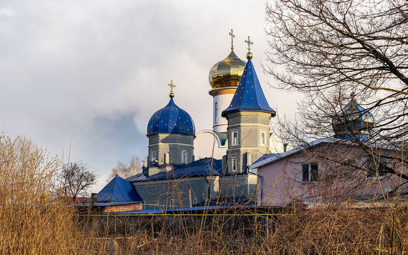
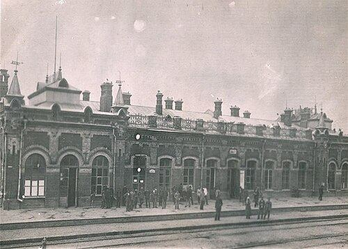
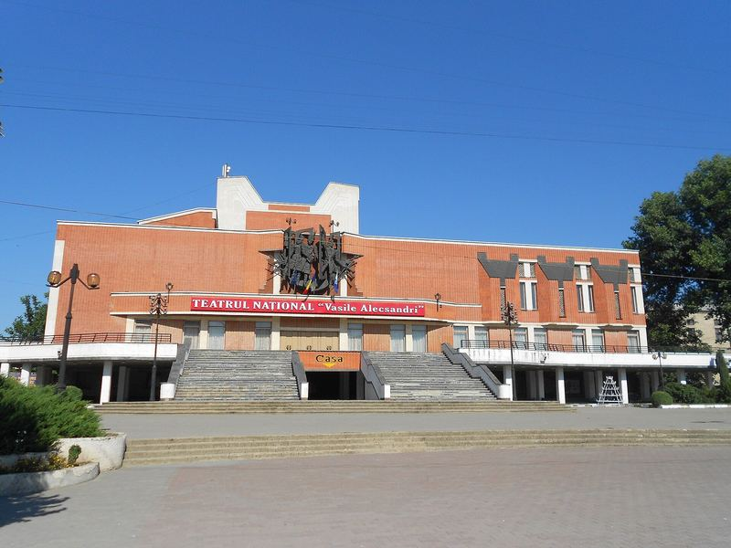
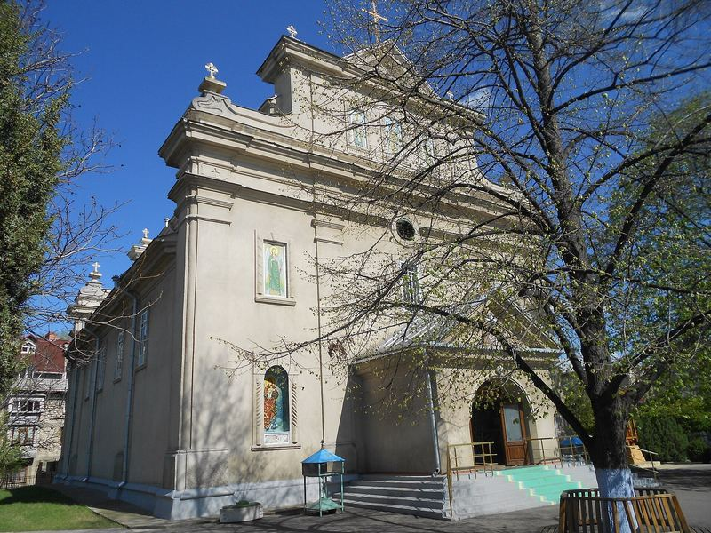
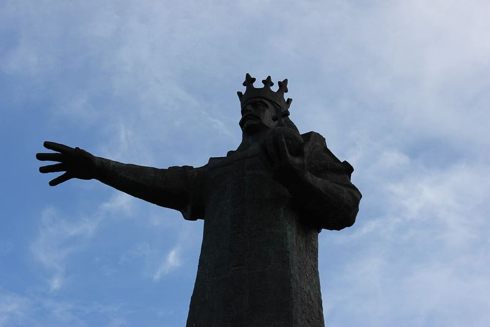
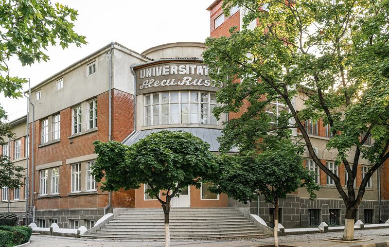
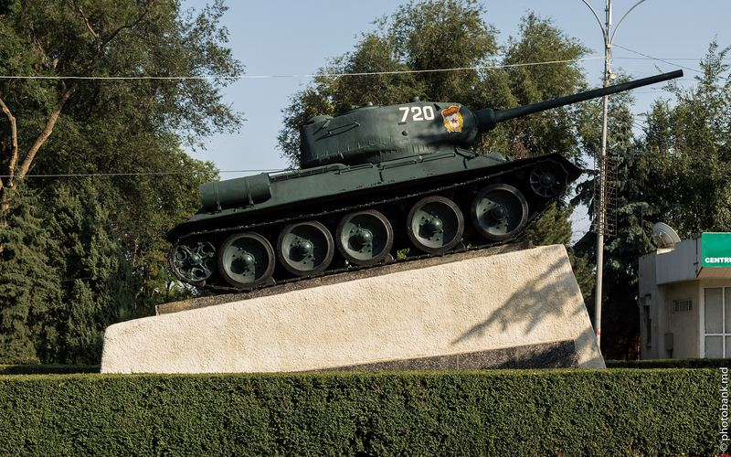
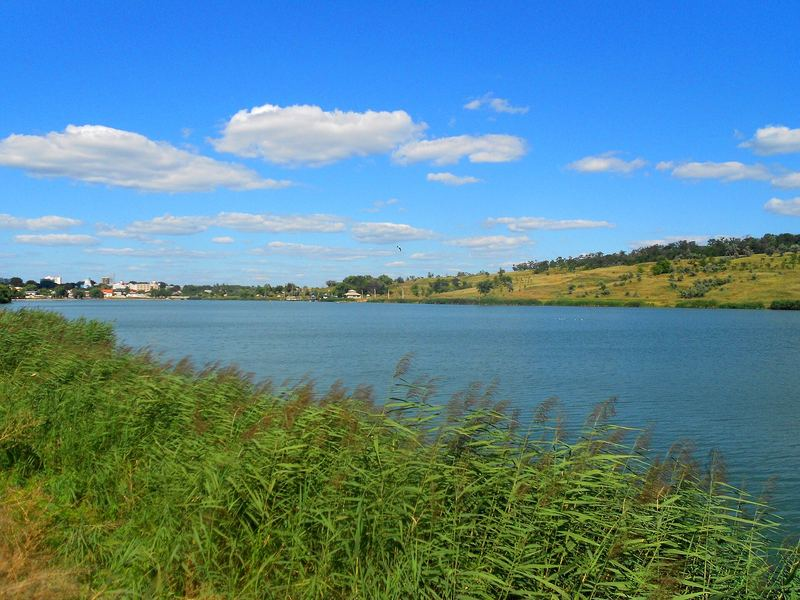
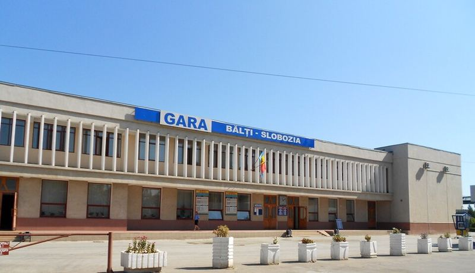
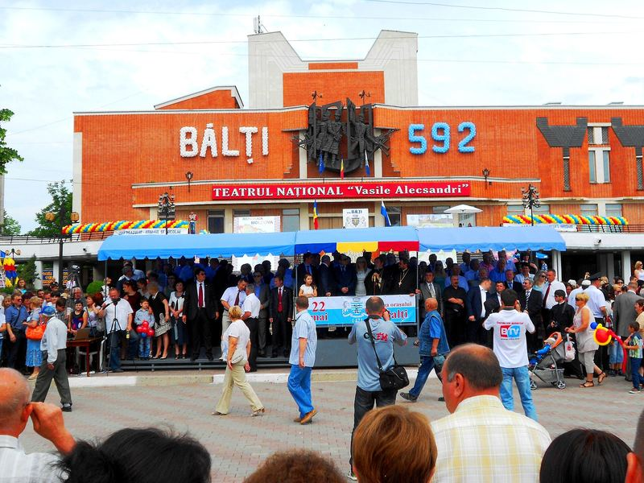

Туристический портал БельцыPortalul turistic al orașului BălțiBălți tourist portal
Бельцы — северная столица МолдовыBălți — capitala de nord a MoldoveiBălți — the northern capital of Moldova
Второй по величине город страны, в 127 км от Кишинёва. Храмы, театр, озёра и всё, что нужно гостю, — в одном месте.Al doilea oraș ca mărime din țară, la 127 km de Chișinău. Biserici, teatru, lacuri și tot ce îi trebuie unui oaspete — într-un singur loc.The country's second-largest city, 127 km from Chișinău. Churches, a theatre, lakes and everything a visitor needs — in one place.
Церковь Архангела МихаилаBiserica Sfântul Arhanghel MihailChurch of the Holy Archangel Michael
1803
Бельцы получает статус городаBălți primește statut de orașBălți receives town status
127 км127 km127 km
от Кишинёваde la Chișinăufrom Chișinău
≈ 91 тыс.≈ 91 mii≈ 91k
жителей в городе, перепись 2024locuitori în oraș, recensământul 2024residents in the city, 2024 census
2 вокзала2 gări2 stations
Бельцы-Слобозия и Бельцы-ГородBălți-Slobozia și Bălți-OrașBălți-Slobozia and Bălți-Oraș
ПрошлоеTrecutulThe past
История городаIstoria orașuluiCity history
Город на реке Рэут вырос на перекрёстке почтовых дорог из Ясс, Хотина, Сорок и Орхея. Сегодня это второй по величине город Молдовы и центр Региона развития Север.Orașul de pe râul Răut a crescut la intersecția drumurilor de poștă dinspre Iași, Hotin, Soroca și Orhei. Astăzi este al doilea oraș ca mărime din Moldova și centrul Regiunii de Dezvoltare Nord.The town on the Răut river grew at the crossroads of the post roads from Iași, Hotin, Soroca and Orhei. Today it is Moldova's second-largest city and the centre of the North Development Region.
- 1795Построен собор Святого Николая.Este construită Catedrala Sfântul Nicolae.St Nicholas Cathedral is built.
- 1803Бельцы получает статус города.Bălți primește statut de oraș.Bălți receives town status.
- 1916Построена армянская церковь Святого Григория.Este construită biserica armenească Sfântul Grigore.The Armenian Church of St Gregory is built.
- 1930-еAnii 19301930sВозведён кафедральный собор Святых Константина и Елены.Este ridicată Catedrala Sfinții Constantin și Elena.The Cathedral of Saints Constantine and Helena is erected.
- 2003Открыт памятник Штефану чел Маре.Este inaugurat monumentul lui Ștefan cel Mare.The monument to Stephen the Great is unveiled.

МаршрутTraseuRoute
Что посмотретьCe să veziWhat to see
-

АрхитектураArhitecturăArchitectureНациональный театр им. Василе АлександриTeatrul Național „Vasile Alecsandri”"Vasile Alecsandri" National Theatre
-
ХрамыLăcașuri de cultChurches
Церковь Архангела МихаилаBiserica Sfântul Arhanghel MihailChurch of the Holy Archangel Michael
-

ХрамыLăcașuri de cultChurchesСобор Святого НиколаяCatedrala Sfântul NicolaeSt Nicholas Cathedral
-

ПамятникиMonumenteMonumentsПамятник Штефану чел МареMonumentul lui Ștefan cel MareStephen the Great Monument
-

АрхитектураArhitecturăArchitectureУниверситет им. Алеку РуссоUniversitatea „Alecu Russo”"Alecu Russo" State University
-

ПамятникиMonumenteMonumentsПамятник «Танк Т-34»Monumentul „Tancul T-34”"T-34 Tank" Monument
-

ПриродаNaturăNatureГородское озероLacul orășenescCity Lake
-

АрхитектураArhitecturăArchitectureВокзал Бельцы-СлобозияGara Bălți-SloboziaBălți-Slobozia Station
МедиаMediaMedia
Видео о БельцыVideo despre BălțiVideos about Bălți
-
8:56
Смотреть видеоVezi videoWatch video
Бельцы — город, где молодёжь встречается и строит будущееBălți — orașul unde tinerii se întâlnesc și își construiesc viitorulBălți — a city where young people meet and build their future
-
2:32
Смотреть видеоVezi videoWatch video
Бельцы с высоты птичьего полёта, 4KBălți din zbor de pasăre, 4KBălți from above, 4K
-
4:22
Смотреть видеоVezi videoWatch video
Город с высоты: центр и озероOrașul de sus: centrul și laculThe city from above: centre and lake
Для гостейPentru oaspețiFor visitors
Где остановиться и поестьUnde te cazezi și unde mănânciWhere to stay and eat
ЖильёCazareAccommodation7
- Hotel VisPasул. Штефан чел Маре, 1/2str. Ștefan cel Mare, 1/21/2 Ștefan cel Mare StМаршрутTraseuDirections
- Elite Hotelул. Хотинская, 17str. Hotin, 1717 Hotin StМаршрутTraseuDirections
- Lido Luxул. Децебал, 139str. Decebal, 139139 Decebal StМаршрутTraseuDirections
- Astoriaул. Николае Йорга, 26str. Nicolae Iorga, 2626 Nicolae Iorga StМаршрутTraseuDirections
- White Houseул. Георге Кошбук, 6str. George Coșbuc, 66 George Coșbuc StМаршрутTraseuDirections
- New Apartment Baltiул. Михай Витязулstr. Mihai ViteazulMihai Viteazul StМаршрутTraseuDirections
- Dream Houseул. Кишинёвская, 77Astr. Chișinăului, 77A77A Chișinăului StМаршрутTraseuDirections
Рестораны и кафеRestaurante și cafeneleRestaurants and cafés12
- Olivaул. Индепенденцей, 15Astr. Independenței, 15A15A Independenței StМаршрутTraseuDirections
- Norocул. Децебал, 131str. Decebal, 131131 Decebal StМаршрутTraseuDirections
- La Familia Plăcintăул. Пушкина, 46str. Pușkin, 4646 Pușkin StМаршрутTraseuDirections
- Wine Houseул. Александру чел Бун, 5str. Alexandru cel Bun, 55 Alexandru cel Bun StМаршрутTraseuDirections
- La Peștișorул. Михаила Садовяну, 37str. Mihail Sadoveanu, 3737 Mihail Sadoveanu StМаршрутTraseuDirections
- Oscarул. Михаила Садовяну, 1str. Mihail Sadoveanu, 11 Mihail Sadoveanu StМаршрутTraseuDirections
- Goldhausул. Аэродромулуй, 1str. Aerodromului, 11 Aerodromului StМаршрутTraseuDirections
- Moldovaул. Бабинского, 2str. Babinschi, 22 Babinschi StМаршрутTraseuDirections
- Feeling Coffeeул. Индепенденцей, 108str. Independenței, 108108 Independenței StМаршрутTraseuDirections
- Compotул. Штефан чел Маре, 70str. Ștefan cel Mare și Sfânt, 7070 Ștefan cel Mare și Sfânt StМаршрутTraseuDirections
- The Grindул. Либертэций, 14str. Libertății, 1414 Libertății StМаршрутTraseuDirections
- Coffee Inул. Индепенденцей, 35/2str. Independenței, 35/235/2 Independenței StМаршрутTraseuDirections
Список составлен командой. Часы работы и цены уточняйте перед визитом.Lista este alcătuită de echipă. Verificați programul și prețurile înainte de vizită.List compiled by the team. Please check opening hours and prices before your visit.

Календарь годаCalendarul anuluiYear calendar
СобытияEvenimenteEvents
-
22 мая22 mai22 May
День городаZiua orașuluiCity Day
Шествие «Bălți. Acasă. Împreună», фестиваль ETNO Bălți, ярмарка народных мастеров.Alaiul „Bălți. Acasă. Împreună”, festivalul ETNO Bălți, târgul meșterilor populari.The “Bălți. Acasă. Împreună” parade, the ETNO Bălți festival and a folk crafts fair.
-
2 июля2 iul2 Jul
День памяти Штефана чел МареZiua comemorării lui Ștefan cel MareStephen the Great Remembrance Day
Возложение цветов у памятника на Площади Независимости.Depunere de flori la monumentul din Piața Independenței.Laying of flowers at the monument in Independence Square.
-
ИюльIulJul
«Dialoguri Muzicale»„Dialoguri Muzicale”“Dialoguri Muzicale”
Концерт под открытым небом для жителей и гостей города.Concert în aer liber pentru locuitori și oaspeți.Open-air concert for residents and visitors.
-
12 авг12 aug12 Aug
Международный день молодёжиZiua Internațională a TineretuluiInternational Youth Day
Мероприятия примэрии для молодёжи города.Activitățile Primăriei pentru tinerii orașului.City hall events for young people.
-
АвгAugAug
«Bunica și Bunelul Fest»„Bunica și Bunelul Fest”“Bunica și Bunelul Fest”
Фестиваль для бабушек, дедушек и внуков.Festival pentru bunici și nepoți.A festival for grandparents and grandchildren.
-
ДекDecDec
Открытие главной ёлкиAprinderea Pomului de CrăciunChristmas tree lighting
Праздник на центральной площади города.Sărbătoare în piața centrală a orașului.A celebration in the city’s central square.
-
31 дек31 dec31 Dec
Новогодний концертSpectacolul de RevelionNew Year’s Eve show
Во Дворце культуры муниципия Бельцы.La Palatul Municipal de Cultură Bălți.At the Bălți Municipal Palace of Culture.
-
СезонSezonSeason
Спектакли театра им. В. АлександриSpectacolele Teatrului „V. Alecsandri”“V. Alecsandri” Theatre performances
Репертуар и билеты — на сайте и в кассе театра.Repertoriul și biletele — pe site-ul și la casa teatrului.Programme and tickets — on the theatre’s website and at the box office.
По анонсам примэрии 2025–2026 гг. Точные даты и новые события —După anunțurile Primăriei din 2025–2026. Datele exacte și evenimentele noi —Based on city hall announcements for 2025–2026. Exact dates and new events — balti.md
Для бизнеса и музеевPentru afaceri și muzeeFor businesses and museums
Станьте партнёром порталаDeveniți partener al portaluluiBecome a portal partner
Гостиница, кафе, музей или организатор событий? Заполните форму — мы добавим или обновим вашу информацию на сайте бесплатно.Hotel, cafenea, muzeu sau organizator de evenimente? Completați formularul — vă adăugăm sau actualizăm informația pe site gratuit.A hotel, café, museum or event organiser? Fill in the form and we will add or update your information on the site for free.
Перед поездкойÎnainte de călătorieBefore you go
Полезная информацияInformații utileUseful info
-
Как добратьсяCum ajungiGetting here
Поезд: вокзалы Бельцы-Слобозия и Бельцы-Город. Автобус: автовокзал. Около 127 км от Кишинёва.Tren: gările Bălți-Slobozia și Bălți-Oraș. Autobuz: autogara. Circa 127 km de Chișinău.Train: Bălți-Slobozia and Bălți-Oraș stations. Bus: the bus station. About 127 km from Chișinău.
-
Экстренная помощьUrgențeEmergencies
Единый номер 112 — полиция, скорая помощь, пожарные.Numărul unic 112 — poliție, ambulanță, pompieri.Single number 112 — police, ambulance, fire service.
-
Деньги и языкBani și limbăMoney and language
Валюта — молдавский лей (MDL). Государственный язык — румынский, многие жители говорят по-русски.Moneda — leul moldovenesc (MDL). Limba de stat — româna, mulți locuitori vorbesc și rusa.Currency — Moldovan leu (MDL). State language — Romanian; many residents also speak Russian.
-
ОфициальноInformații oficialeOfficial information
Новости и объявления города — на сайте примэрииȘtirile și anunțurile orașului — pe site-ul primărieiCity news and announcements — on the city hall website balti.md